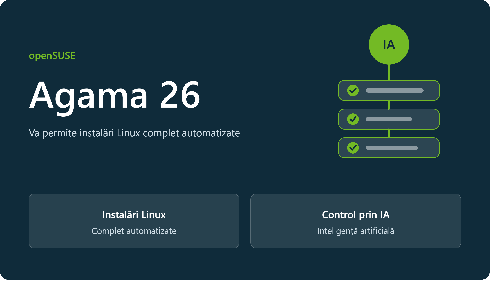

openSUSE Agama 26 va permite instalări Linux complet automatizate, controlate prin inteligență artificială

Dezvoltatorii Agama, programul de instalare Linux de nouă generație al proiectului openSUSE și succesorul tradiționalului sistem YaST, au anunțat integrarea suportului pentru agenți AI în viitoarea versiune Agama 26. Noua funcționalitate va permite utilizatorilor și administratorilor de sistem să configureze și să instaleze distribuții Linux folosind comenzi în limbaj natural.
Cum funcționează integrarea AI prin serverul MCP
Noua capabilitate se bazează pe un server MCP (Model Context Protocol) integrat direct în Agama, care le oferă asistenților AI externi o interfață structurată pentru a configura, executa și monitoriza procesul de instalare a sistemului de operare.
De exemplu, un utilizator îi va putea cere unui asistent AI să instaleze openSUSE Tumbleweed cu mediul desktop GNOME, să configureze o unitate NVMe cu sistemul de fișiere Btrfs și să creeze un cont de utilizator, fără a mai parcurge manual ecranele clasice de configurare.
Două moduri de operare
Agama 26 va pune la dispoziție două moduri distincte de utilizare a agenților AI:
Modul asistat (supervizat): Agentul AI are permisiunea doar de a pregăti profilul și setările de instalare, lăsând aprobarea finală și pornirea efectivă a procesului în seama unui operator uman.
Modul complet automatizat (nesupravegheat): Permite agenților AI să deruleze instalări cap-coadă — inclusiv formatarea discurilor și repornirea sistemului — fiind ideal pentru provizionarea automată a infrastructurilor server.
Măsuri de securitate și disponibilitate
Având în vedere natura critică și potențial distructivă a operațiunilor de instalare a unui sistem de operare, dezvoltatorii au implementat mai multe mecanisme de protecție:
Validare strictă: Configurațiile generate sunt verificate prin JSON Schema și controale pentru detectarea parametrilor invalizi din punct de vedere tehnic.
Controlul accesului: Interfața folosește tokenuri dedicate de autentificare și pune la dispoziție instrumente de diagnosticare.
Fără acces direct la shell: Agenții AI nu primesc acces direct la terminal și nu pot apela utilitare de partiționare la nivel scăzut; toate solicitările sunt procesate exclusiv prin mecanismele interne ale Agama.
Dezactivat implicit: Serverul MCP va fi oprit în mod implicit, astfel încât utilizatorii care preferă instalările clasice nu vor observa nicio schimbare în fluxul lor obișnuit de lucru.
Deși funcționalitatea va debuta oficial odată cu lansarea versiunii Agama 26, cei interesați o pot testa deja prin intermediul imaginilor de instalare nightly ale proiectului.